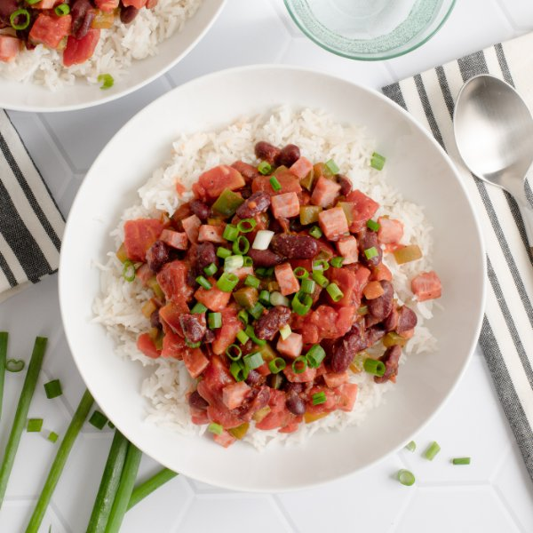

Cajun-Style Ham & Kidney Bean Stew over Rice with Green Onions

Nutrition (per serving)
598.9 kcalCalories
39.6 gProtein
82.2 gCarbs
13.1 gFat
Full nutrition table
| Calories | 598.9 kcal |
| Total fat | 13.1 g |
| Saturated fat | 5.8 g |
| Trans fat | 0.2 g |
| Cholesterol | 66.5 mg |
| Sodium | 2607.7 mg |
| Carbohydrates | 82.2 g |
| Fiber | 14.3 g |
| Sugars | 13 g |
| Protein | 39.6 g |
| Potassium | 1424.8 mg |
| Calcium | 213.1 mg |
| Iron | 7.4 mg |
| Vitamin A | 1625.1 IU |
| Vitamin C | 120 mg |
| Vitamin D | 4.3 IU |
Cookware
Ingredients
- 1 cupbasmati rice
- 2 (14.5 oz) cansdiced tomatoes
- 2green bell peppers
- 2 small bunchesgreen onions (scallions)
- 16 ozham steak, boneless
- 2 (15 oz) canskidney beans
- all-purpose flour
- butter, unsalted
- Cajun seasoning
- salt
Steps
- Using a strainer or colander, rinse the rice under cold, running water, then drain and transfer to a medium saucepan. Add water and salt, then bring the mixture to a boil over high heat.1 cup basmati rice
2 cup water
¼ tsp salt - Once the liquid comes to a boil, stir the mixture, cover the saucepan, and reduce heat to low. Cook rice until liquid is fully absorbed, 15-18 minutes. Once done, remove rice from the heat and let it stand, still covered, for 5 minutes.
- Wash, dry, trim, and seed bell peppers; small dice. Place in a medium bowl.2 green bell peppers
- Wash, dry, trim, and cut green onions crosswise into thin pieces. Add half to the bowl with the bell pepper. (Reserve remaining green onion for serving.)2 small bunches green onions (scallions)
- Preheat a large skillet over medium heat.
- While the skillet heats up, small dice ham. Add to the bowl with the veggies.16 oz ham steak, boneless
- Once the skillet is hot, add butter and swirl to coat the bottom. Add veggies, ham, flour, and Cajun seasoning. Cook, stirring occasionally, until veggies start to soften, about 3 minutes.2 tbsp butter, unsalted
2 tbsp all-purpose flour
4 tsp Cajun seasoning - Meanwhile, drain and rinse beans.2 (15 oz) cans kidney beans
- When the veggies are soft, add beans, tomatoes, and salt to the skillet. Stir to combine the stew and bring to a boil. Once boiling, reduce heat to low, cover with a lid, and cook until beans are tender and stew has thickened, 8-10 minutes. Remove from heat.2 (14.5 oz) cans diced tomatoes
½ tsp salt - To serve, divide rice and stew between plates or bowls. Sprinkle with reserved green onion and enjoy!